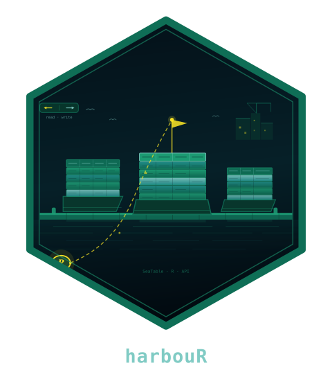

You have a SeaTable base of patient samples and you want to pull it
into R for analysis, push your results back, and attach the resulting
PDF reports - all without leaving R. harbouR is an
unofficial R client that lets you do exactly that.
SeaTable is a trademark of SeaTable GmbH; harbouR is not affiliated with or endorsed by SeaTable GmbH.
Connect
library(harbouR)
client <- hb_client(
server = Sys.getenv("SEATABLE_SERVER"),
api_token = Sys.getenv("SEATABLE_API_TOKEN")
)SeaTable uses a three-token model. You hand harbouR either an API-token (long-lived, per-base, generated in the SeaTable UI) or a username+password pair. harbouR exchanges these for a short-lived base-token the first time it needs to, caches it, and refreshes transparently when it expires - you never see it.
Inspect the base
The remaining chunks here all run offline, against the bundled example data, so you can knit the vignette without a server.
library(harbouR)
meta <- hb_example_metadata()
meta
#>
#> ── <harbour_metadata> ──────────────────────────────────────────────────────────
#> • base : "harbouR demo base"
#> • tables : 2
#>
#> - Samples (7 cols, 0 rows)
#> - Patients (4 cols, 0 rows)
tibble::as_tibble(meta)
#> # A tibble: 2 × 4
#> name n_rows n_columns n_views
#> <chr> <int> <int> <int>
#> 1 Samples 0 7 1
#> 2 Patients 0 4 1Read a table
Against a live server this is a single call:
samples <- hb_read_table(client, "Samples")The offline equivalent returns a tibble of the same shape, including list-columns for multi-select / collaborator / file values:
samples <- hb_example_rows("Samples")
samples
#> # A tibble: 3 × 8
#> Name Concentration Status Tags Collected Collaborators Reports
#> <chr> <dbl> <chr> <list> <dttm> <list> <list>
#> 1 S-001 12.4 draft <chr> 2026-04-01 09:00:00 <chr [1]> <list>
#> 2 S-002 8.1 ready <chr> 2026-04-03 12:30:00 <chr [2]> <list>
#> 3 S-003 21 shipped <chr> 2026-04-05 16:15:00 <chr [0]> <list>
#> # ℹ 1 more variable: `_id` <chr>Analyse
samples is a regular tibble. Everything you already know
about dplyr / ggplot2 / etc. just works:
samples[samples$Status == "ready", c("Name", "Concentration", "Collected")]
#> # A tibble: 1 × 3
#> Name Concentration Collected
#> <chr> <dbl> <dttm>
#> 1 S-002 8.1 2026-04-03 12:30:00Write back
Appending and updating accept any tibble whose columns match the schema:
new_rows <- tibble::tibble(
Name = "S-004",
Concentration = 17.2,
Status = "draft"
)
hb_append_rows(client, "Samples", new_rows)
hb_update_rows(
client, "Samples",
tibble::tibble(`_id` = "r0001", Concentration = 99.9)
)Attach a file
hb_attach_file(client, "Samples", "r0001", "Reports", "report.pdf")Next steps
- The
column-typesvignette explains the coercion layer in detail. - The
explorer-appvignette walks throughhb_run_explorer().